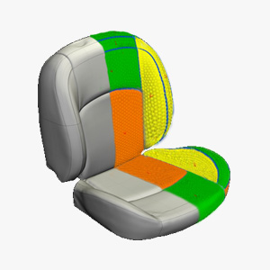
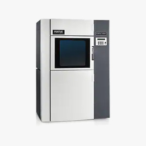
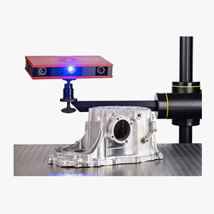
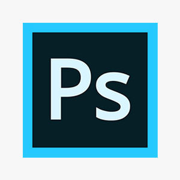
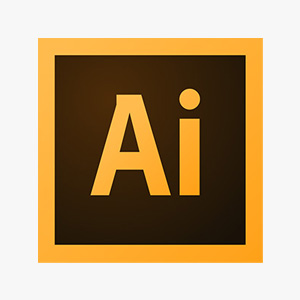

資訊工程類

HTML
此網頁本身是我實作HTML的成果，了解HTML的標準、網頁的架構、各元件的特性與表單的建立。

CSS
學習過版面的切版技巧，各種CSS式樣的特性，RWD配置，也理解元件的特性對網頁呈現的影響。

JavaScript
會使用JS的指令碼，包括函式、物件原型、DOM處理、Canvas、離線儲存，也實作過與外部API的串接。

jQuery
會使用jQuery選取器、動態效果、控制DOM與事件處理等用法，也接觸過jQuery UI等相關套件。
Java
已學習過Java的基本語言，包括資料型別、集合、記憶體管理與事件處理，以及物件導向的特性。
SQL
學習過MySQL的指令語法，包含資料表的建立與查詢、查詢函式、關聯查詢，也理解資料表正規化的目的。
造型設計類
Alias
造型設計軟體，為產品外觀進行3D的建模工具，具有繪製造型曲面的能力，目前主要用來繪製產品外型。
KeyShot
用來渲染產品的3D模型，將產品的外觀做擬真的材質套用，在開發前期製作CG圖來表現產品的形式與功能。
產品工程類
NX
3D工程繪圖軟體，用於設計開模用的零件部品，目前主要用於座椅的泡棉與塑膠件的工程設計。

電腦打樣
座椅的椅套樣板打樣，透過3D模型模擬表皮材再展開為2D樣板，並進行樣板的後處理與透過電子化方式管理樣板。

3D列印
進行產品研發的零件打樣時，負責操作與維護FDM(熔融沉積)技術的3D列印機，並對模型的外觀進行加工處理。

逆向工程
主要分為逆向建模與物品檢測，負責操作設備掃描物件、處理網格檔案，並進行逆向建模以及檢測設計的差異。
平面設計類

PhotoShop
照片編輯與平面繪圖之用，熟悉影像的調整與去背，並可進行產品的概念繪圖。

Illustrator
向量檔設計軟體，用於印刷品的版面設計與編排，並可繪製向量形式的圖案。